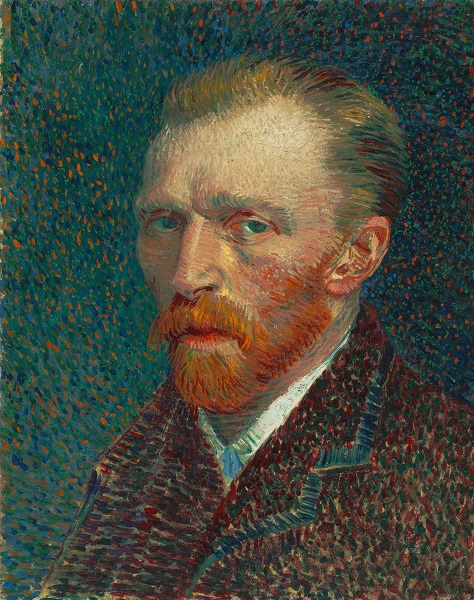

|  |
- Date of Birth: 30 March 1853
- Date of Death: 29 July 1890 (age 37)
- Place of living: Stockwell
- Painting Genres: Pointillism, Neo-impressionism, Post-Impressionism
- Famous Works: Sorrow, The Potato Eaters, Sunflowers, Bedroom in Arles, The Starry Night, Portrait of Dr. Gachet, Wheatfield with Crows
|